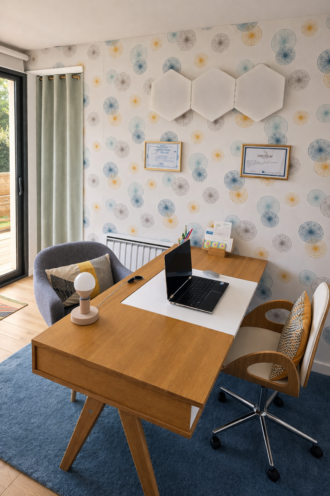

Des consultations en cabinet à Cestas (33) ou en visioconférence, partout en France.
La première consultation de naturopathie dure 1h30. C'est un temps long, nécessaire pour bien vous connaître.
Je vais vous poser de nombreuses questions : sur le motif de votre consultation, bien sûr, mais aussi sur les événements importants de votre vie, votre historique médical, vos habitudes alimentaires, votre sommeil, votre activité physique, votre vie professionnelle et familiale…
Toutes ces informations me permettent d'établir un programme entièrement personnalisé, que je vous enverrai par mail à l'issue de la consultation — un support écrit pour vous accompagner concrètement.
Nous aborderons des sujets personnels, peut-être sensibles. À votre rythme, sans vous brusquer. Mon objectif est que vous vous sentiez écoutée et à l'aise.

Elle dure 45 minutes. Nous faisons le bilan des actions mises en œuvre depuis la dernière consultation : les améliorations constatées, ce qui reste à travailler, ce qui a été difficile à mettre en place.
Cela me permet d'apporter les ajustements nécessaires au programme et de continuer à l'adapter à votre évolution. Le rythme des suivis est défini ensemble, selon vos besoins — généralement toutes les 4 à 8 semaines.
Bilan complet, anamnèse, programme personnalisé envoyé par mail.
Bilan des actions mises en œuvre, ajustements du programme.
Bilan adapté à l'enfant, programme personnalisé.
Suivi et ajustements.
Un appel découverte de 15 minutes, gratuit et sans engagement, pour faire connaissance.